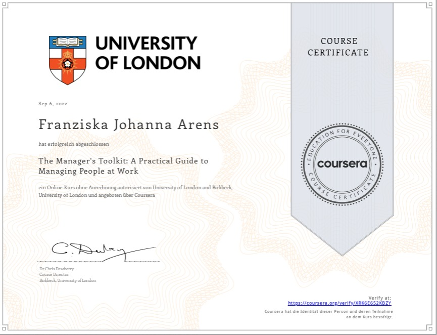

On set with 48h Project Groningen
I participated with a group of film enthusiasts for the first time in the 48h Film project Groningen
in 2023. I was on set as Camera Assistant, helping out with set-Design and where else help was needed.
We won 3 awards as a group with our short film "Bourgeoisie": Best Set-Design, Best Hair and Make-Up,
and Best use of Props.

Head of Sportsevents committee
I have been the head of the sports committee team of Stuco (student council). Together,
we organized 3 (Dodgeball, Beach Volleyball, Basketball) successfull events for students
with a partcipation of around 100
participants and watchers. My job was to lead the team, deligate, manage the location, Keep
an overview and organize meetings until the final date of the event.
NHL Stenden Ambassador
I have been an Ambassador for NHL Stenden in Leeuwarden (NL) from September 2022. As German Ambassador, I travelled to multiple School fairs in Germany to recruit new students to come study at NHL Stenden in the Netherlands.I learned to communicate open, approach people and adapt quickly to topic change, as well as further improved presentation skills.

Mini-Series "Soundhunters"
In the context of a university project, together with a team of six people, we created the concept and produced a show called "Soundhunters" conisting of 6 episodes. Every episode was organized, filmed and edited in one week. My role in this production was the main camera operator and DOP, as well as script writer together with the Director. The episodes can be found on Matters, a student streaming platform made by students from NHL Stenden via this link.
Watch Now on Matters Production BookOcean Conservation Magazine
I concepted and designed a magazine about Ocean conservation in South Africa via InDesign. My motivation was the volunteer work in marine conservation in Plettenberg Bay, South Africa, that I pursued after my graduation. This topic is a passion of mine: I enjoyed interviewing my coordinator and ocean conservationist Melissa Nel for this and learning more from her.
Magazine PDF

Courses & Certificates"
I absolved two online courses in the year of 2022: Fundamentals of Digital Marketing (Google) & The Manager's Toolkit: A Practical Guide to
Managing People at Work (Coursera).
This enriched me in my theoretical knowlegde on leading and organizing, as well as practicial information
in digital marketing.
I also absolved a course in photography and videography, organized by students experienced in the field.
This helped me develop a basic understanding in camera work, sparked my interest in visual storytelling and
enriched my creative thinking skills.
Next to this, I also absolved a Dutch course, A1 level, to be able to adapt more to my environment
in the Netherlands and be able to communicate or understand clients of university projects and
restaurant work.